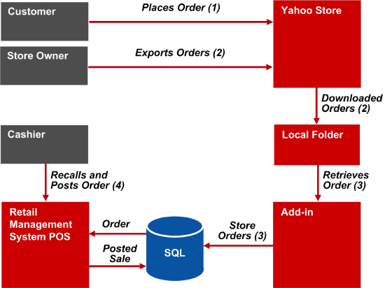

Yahoo! integration allows orders placed on Yahoo! to be processed as a sales transaction in Store Operations POS. A simple manual Yahoo! integration process consists of the following steps.
A customer places an Internet order on the Yahoo Web store.
The store owner logs on to Yahoo! and downloads Internet orders to a local folder as an XML document.
A user-created add-in parses the local XML document and adds the data to the Exchange table in the Store Operations database. For more information about writing this add-in, see the Manual Integration Add-In Details section below.
A cashier logs on to the POS and then presses CTRL+SHIFT+F10 to display the list of Internet orders stored in the Exchange table. The cashier selects an Internet order to process and uses the wizard to load the data from the Internet order into the current sales transaction. The wizard also checks the XML data for errors and adds new customers and shipping addresses if found. The cashier then handles the sales transaction as usual.
The following diagram illustrates this process.

You must create a custom add-in to parse the XML data downloaded from Yahoo! into the Exchange table before it can be processed. Your add-in should perform the following steps.
Monitor a dedicated folder on the local computer for any Internet orders that have not been processed.
Parse received XML orders to retrieve each individual order. XML documents downloaded from Yahoo! contain an <OrderList> node, under which exist one or more <Order> nodes that contain information for individual orders. For more details, see XML Format - Mapping to Retail Management System and XML Sample of Downloaded Order.
Insert a new row into the Exchange table with the following information.
ProcessorCode column: The string 'YahooStore'.
Data column: XML data for a single order (retrieved in step 2), enclosed in single quotes (').